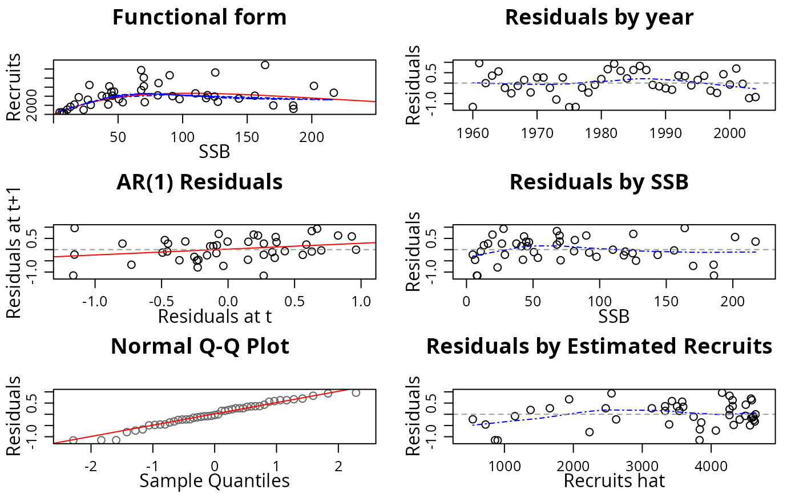
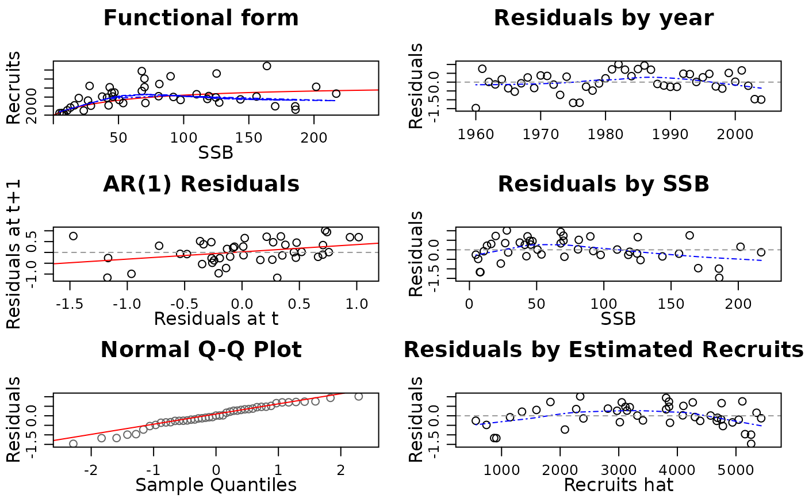

FLSR.RdClass for stock-recruitment models.
FLSR(model, ...) # S4 method for ANY FLSR(model, ...) # S4 method for missing FLSR(model, ...)
A series of commonly-used stock-recruitment models are already available,
including the corresponding likelihood functions and calculation of initial
values. See SRModels for more details and the exact
formulation implemented for each of them.
Name of the object (character).
Description of the object (character).
Range (numeric).
Recruitment series (FLQuant).
Index of reproductive potential, e.g. SSB or egg oor egg production (FLQuant).
Estimated values for rec (FLQuant).
Residuals obtained from the model fit (FLArray).
Covariates for SR model (FLQuants).
Model formula (formula).
Function returning the gradient of the likelihood (function).
Log-likelihood function (function).
Function returning initial parameter values for the optimizer (function).
Estimated parameter values (FLPar).
Value of the log-likelihood (logLik).
Variance-covariance matrix (array).
Extra information on the model fit procedure (list).
Is the error on a log scale (logical).
(factor).
Resulting Hessian matrix from the fit (array).
FLModel, FLComp
# Create an empty FLSR object. sr1 <- FLSR() # Create an FLSR object using the existing SR models. sr2 <- FLSR(model = 'ricker') sr2@model#> rec ~ a * ssb * exp(-b * ssb) #> <environment: 0x130a6d50>sr2@initial#> function(rec, ssb) { #> # The function to provide initial values #> res <-coefficients(lm(log(c(rec)/c(ssb))~c(ssb))) #> return(FLPar(a=max(exp(res[1])), b=-max(res[2])))} #> <environment: 0x130a6d50> #> attr(,"lower") #> [1] -Inf -Inf #> attr(,"upper") #> [1] Inf Infsr2@logl#> function(a, b, rec, ssb) #> loglAR1(log(rec), log(a*ssb*exp(-b*ssb))) #> <environment: 0x130a6d50>sr3 <- FLSR(model = 'bevholt') sr3@model#> rec ~ a * ssb/(b + ssb) #> <environment: 0x1543f860>sr3@initial#> function(rec, ssb) { #> a <- max(quantile(c(rec), 0.75, na.rm = TRUE)) #> b <- max(quantile(c(rec)/c(ssb), 0.9, na.rm = TRUE)) #> return(FLPar(a = a, b = a/b))} #> <environment: 0x1543f860> #> attr(,"lower") #> [1] -Inf -Inf #> attr(,"upper") #> [1] Inf Infsr3@logl#> function(a, b, rec, ssb) #> loglAR1(log(rec), log(a*ssb/(b+ssb))) #> <environment: 0x1543f860># Create an FLSR using a function. mysr1 <- function(){ model <- rec ~ a*ssb^b return(list(model = model))} sr4 <- FLSR(model = mysr1) # Create an FLSR using a function and check that it works. mysr2 <- function(){ formula <- rec ~ a+ssb*b logl <- function(a, b, sigma, rec, ssb) sum(dnorm(rec, a + ssb*b, sqrt(sigma), TRUE)) initial <- structure(function(rec, ssb) { a <- mean(rec) b <- 1 sigma <- sqrt(var(rec)) return(list(a=a, b=b, sigma=sigma))}, lower = c(0, 1e-04, 1e-04), upper = rep(Inf, 3)) return(list(model = formula, initial = initial, logl = logl)) } ssb <- FLQuant(runif(10, 10000, 100000)) rec <- 10000 + 2*ssb + rnorm(10,0,1) sr5 <- FLSR(model = mysr2, ssb = ssb, rec = rec) sr5.mle <- fmle(sr5)#> Nelder-Mead direct search function minimizer #> function value for initial parameters = 472201.588643 #> Scaled convergence tolerance is 0.00703635 #> Stepsize computed as 13358.013420 #> BUILD 4 84257167485884.187500 364736.828711 #> LO-REDUCTION 6 18352153340100.308594 364736.828711 #> HI-REDUCTION 8 4687197164396.531250 364736.828711 #> HI-REDUCTION 10 1184153971139.947266 364736.828711 #> HI-REDUCTION 12 297381827741.920898 364736.828711 #> HI-REDUCTION 14 74401243415.609268 364736.828711 #> HI-REDUCTION 16 18550626525.672588 364736.828711 #> HI-REDUCTION 18 4603229631.633773 364736.828711 #> HI-REDUCTION 20 1132552691.115204 364736.828711 #> HI-REDUCTION 22 274040347.845235 364736.828711 #> HI-REDUCTION 24 64124727.102706 364736.828711 #> HI-REDUCTION 26 14018817.821885 364736.828711 #> HI-REDUCTION 28 2680934.561353 364736.828711 #> HI-REDUCTION 30 673973.984524 364736.828711 #> REFLECTION 32 472201.588643 197820.184975 #> HI-REDUCTION 34 441022.832376 197820.184975 #> HI-REDUCTION 36 364736.828711 190390.792963 #> HI-REDUCTION 38 204198.748517 182556.905051 #> HI-REDUCTION 40 197820.184975 153376.994018 #> HI-REDUCTION 42 190390.792963 151147.238095 #> HI-REDUCTION 44 182556.905051 151147.238095 #> HI-REDUCTION 46 154521.420093 149821.184397 #> REFLECTION 48 153376.994018 140904.949524 #> EXTENSION 50 151147.238095 125290.090825 #> HI-REDUCTION 52 149821.184397 125290.090825 #> LO-REDUCTION 54 140904.949524 125290.090825 #> HI-REDUCTION 56 136350.913831 125290.090825 #> EXTENSION 58 129821.867205 107636.539205 #> LO-REDUCTION 60 127191.351532 107636.539205 #> EXTENSION 62 125290.090825 99845.492068 #> EXTENSION 64 118735.046604 80604.759312 #> EXTENSION 66 107636.539205 60711.343411 #> EXTENSION 68 99845.492068 47451.536705 #> EXTENSION 70 80604.759312 19327.711397 #> EXTENSION 72 60711.343411 5953.183716 #> LO-REDUCTION 74 47451.536705 5953.183716 #> REFLECTION 76 19327.711397 854.085120 #> LO-REDUCTION 78 8975.663193 854.085120 #> REFLECTION 80 5953.183716 157.618417 #> LO-REDUCTION 82 2721.950712 157.618417 #> LO-REDUCTION 84 1939.276084 157.618417 #> LO-REDUCTION 86 854.085120 69.673303 #> HI-REDUCTION 88 695.069855 69.673303 #> LO-REDUCTION 90 311.928283 69.673303 #> LO-REDUCTION 92 157.618417 69.673303 #> HI-REDUCTION 94 126.299955 69.673303 #> HI-REDUCTION 96 91.340797 69.673303 #> HI-REDUCTION 98 84.607913 69.673303 #> HI-REDUCTION 100 77.307010 69.673303 #> HI-REDUCTION 102 73.330270 69.673303 #> HI-REDUCTION 104 72.496370 69.673303 #> LO-REDUCTION 106 70.420345 69.673303 #> HI-REDUCTION 108 70.280563 69.673303 #> HI-REDUCTION 110 70.187166 69.620653 #> HI-REDUCTION 112 69.706103 69.620653 #> LO-REDUCTION 114 69.681304 69.558233 #> HI-REDUCTION 116 69.673303 69.530771 #> HI-REDUCTION 118 69.620653 69.530771 #> LO-REDUCTION 120 69.558233 69.525482 #> HI-REDUCTION 122 69.547790 69.525482 #> LO-REDUCTION 124 69.530771 69.516747 #> HI-REDUCTION 126 69.526923 69.516480 #> HI-REDUCTION 128 69.525482 69.516147 #> Exiting from Nelder Mead minimizer #> 130 function evaluations usedsr5.nls <- nls(sr5) # NS Herring stock-recruitment dataset data(nsher) # already fitted with a Ricker SR model summary(nsher)#> An object of class "FLSR" #> #> Name: #> Description: #> Quant: age #> Dims: age year unit season area iter #> 1 45 1 1 1 1 #> #> Range: min minyear max maxyear #> 0 1960 0 2004 #> #> rec : [ 1 45 1 1 1 1 ], units = 10^3 #> ssb : [ 1 45 1 1 1 1 ], units = t*10^3 #> residuals : [ 1 45 1 1 1 1 ], units = NA #> fitted : [ 1 45 1 1 1 1 ], units = 10^3 #> #> Model: rec ~ a * ssb * exp(-b * ssb) #> Parameters: #> params #> iter a b #> 1 119 0.00945 #> Log-likelihood: 15.862(0) #> Variance-covariance: #> a b #> a 255.3388181 1.808870e-02 #> b 0.0180887 1.992659e-06plot(nsher)#> Nelder-Mead direct search function minimizer #> function value for initial parameters = -10.336211 #> Scaled convergence tolerance is 1.54022e-07 #> Stepsize computed as 501.110000 #> BUILD 3 44.842344 -11.603908#> Warning: NaNs produced#> HI-REDUCTION 5 31.685209 -11.603908#> Warning: NaNs produced#> HI-REDUCTION 7 17.913114 -11.603908#> Warning: NaNs produced#> HI-REDUCTION 9 5.415279 -11.603908#> Warning: NaNs produced#> HI-REDUCTION 11 -3.412974 -11.603908 #> HI-REDUCTION 13 -8.018030 -11.603908 #> LO-REDUCTION 15 -10.336211 -11.603908 #> LO-REDUCTION 17 -11.081040 -11.603908 #> EXTENSION 19 -11.295930 -12.061705 #> LO-REDUCTION 21 -11.603908 -12.061705 #> REFLECTION 23 -11.813826 -12.087620 #> REFLECTION 25 -12.061705 -12.199591 #> LO-REDUCTION 27 -12.087620 -12.199591 #> LO-REDUCTION 29 -12.158184 -12.199591 #> LO-REDUCTION 31 -12.191726 -12.199591 #> HI-REDUCTION 33 -12.192269 -12.199591 #> HI-REDUCTION 35 -12.197784 -12.199591 #> LO-REDUCTION 37 -12.198015 -12.199591 #> HI-REDUCTION 39 -12.199555 -12.199776 #> REFLECTION 41 -12.199591 -12.200058 #> HI-REDUCTION 43 -12.199776 -12.200092 #> HI-REDUCTION 45 -12.200058 -12.200142 #> HI-REDUCTION 47 -12.200092 -12.200155 #> HI-REDUCTION 49 -12.200142 -12.200160 #> HI-REDUCTION 51 -12.200155 -12.200177 #> HI-REDUCTION 53 -12.200160 -12.200177 #> LO-REDUCTION 55 -12.200171 -12.200179 #> HI-REDUCTION 57 -12.200177 -12.200179 #> HI-REDUCTION 59 -12.200178 -12.200179 #> HI-REDUCTION 61 -12.200179 -12.200179 #> HI-REDUCTION 63 -12.200179 -12.200179 #> HI-REDUCTION 65 -12.200179 -12.200179 #> Exiting from Nelder Mead minimizer #> 67 function evaluations usedplot(nsher)